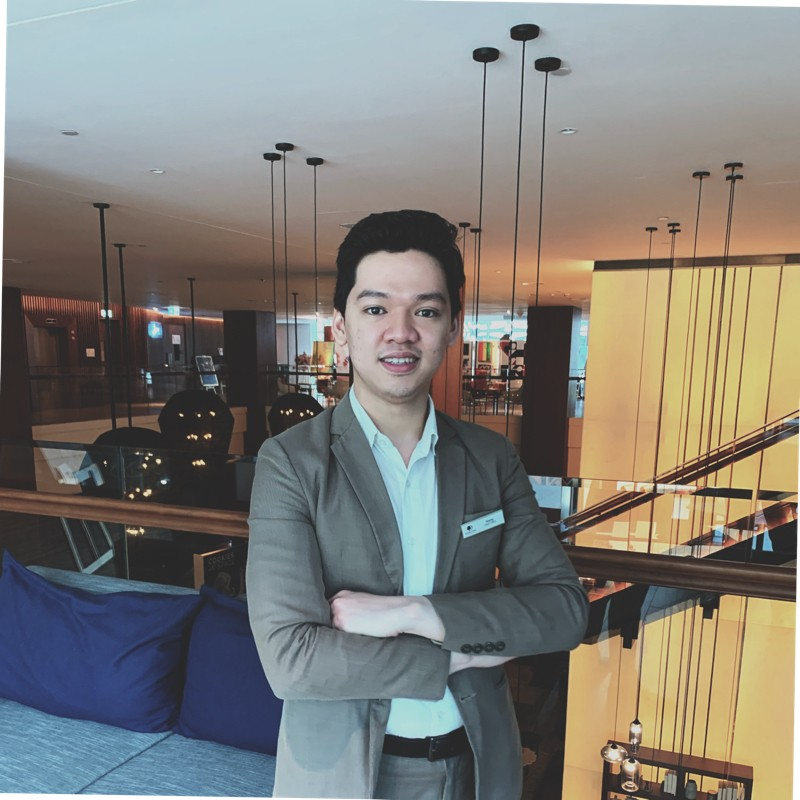

About Me
My name is Kaung Kyaw. I am a Marketing major Student at Saint Paul College. I am a petrol-head, I love cars. And I love photographs. During my free time, I like going out and take some good photos. I used to work in the Hospitality Industry and I grew up in Dubai, UAE. And now here I am in Saint Paul, Minnesota. I love the city and its beautiful landscape. I am an easy-going person with friendly attitude.
Fun fact about me is I like to drink a lot of coffee daily. And my favorite coffee spot in Saint Paul is called Lost Fox in Downtown Saint Paul.